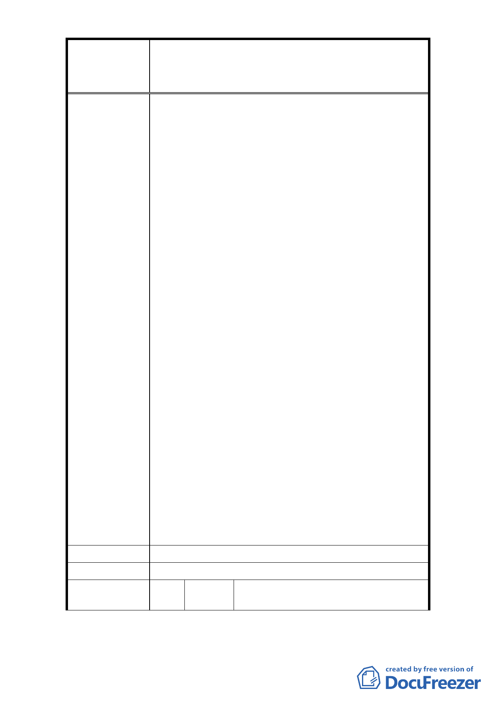

修訂臺北市大安區青田街保存區聚落風貌保存專用區細部計
案
名
畫、變更部分第三種住宅區、第三種商業區(特)為第三種住宅區
(特)(日式宿舍)及第三種商業區(特)(日式宿舍)暨劃定週邊地
區都市設計管制細部計畫案
落保存是怎樣達成的呢？猶記得康旻杰老師提到
地景保護的概念，適用於像是青田街區，這樣具有
老樹、多樣植栽的地區（--不只保護建物，也保護
植物生存的整體環境）。
2. 臺灣歷史資源基金會，也提出像是迪化街等容積移
轉的案例，使當地的聚落保存成為可能。此外，近
年來文化局已經修了好幾棟古蹟，經費有限，在無
作為中，老屋漸漸荒圯，最後也只等著被拆除，那
麼，什麼樣的財務方式，可以吸收民間參與呢?
3. 現在的資金運用方式，是採用一條鞭式的，維修經
費來源完全來自政府。也許有更好的資金運用方
式，可以更有效率。
4. 美國喬治亞州莎凡娜有全美屬一屬二的歷史街區
保存，它歷史協會的循環式古蹟保存基金的運用模
式，或許可做為借鏡：基金會首先確認在區域內瀕
危、或是優先保存的建物，然後在區域性或是國際
的尋找買主，買主必須要求承諾保存該建物歷史面
的完整性。建物的新擁有者，被要求要簽訂保存協
議，他們不用作博物館級的保存，但是必須要遵照
一定的維修指示，並受到基金會的監督。
5. 列為歷史建物的房子，可以享受稅率優待。
6. 為了保持視覺的協調性，所有新開發的房子，它的
高度、顏色、退縮空間都要受到一定的審核，才能
夠興建。
7. 同時，由於歷史保存街區有高級化的可能，另外又
基於公平原則成立了重建計畫，市政府和福特基金
會給予一百六十萬美金的貸款，購買了 260 棟破損
的老房子，作為低收入戶住宅用，確保街區內住戶
有各種的社經背景人士。
以上建議提供參考。
市 府 回 覆 意 見 同編號 1 回覆意見。
委 員 會 決 議 同編號 1 決議。
編
號 25
陳情人
林碧煌、孫利銳、段正大、臺北市
大安區龍安里里民
- 28 -